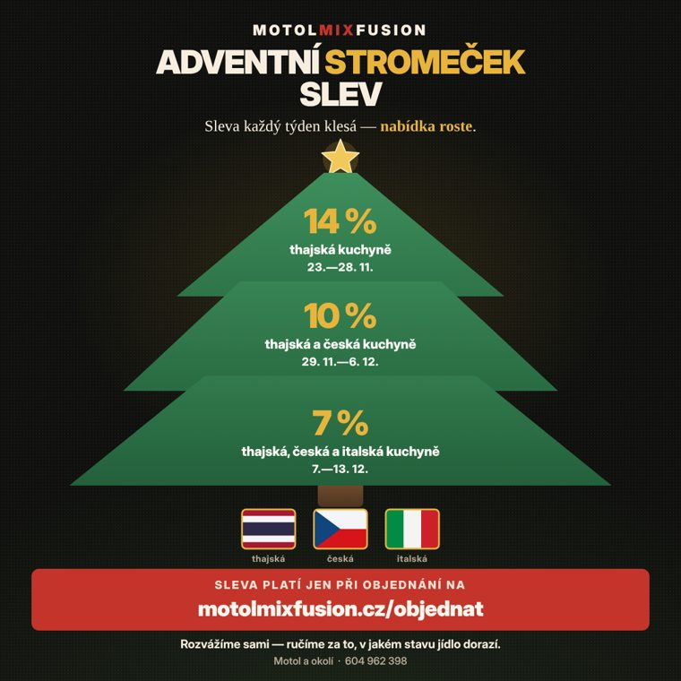

Adventní akce 2026 v MotolMixFusion: od obchodního rozhodnutí k nasazené kampani za dva dny, bez jediné změny v kódu ceníku.
Malá restaurace na sídlišti v Motole, provoz po třech letech, kdy byl prostor zavřený. Ceny jsou v místě konkurenceschopné — hlavní jídla 235 až 315 Kč, zatímco hotelová restaurace o ulici dál začíná na 320 Kč. Přesto chodí málo lidí.
Diagnóza tedy nezní „je to drahé", ale „nikdo o tom neví a dovnitř sám nevejde". To je podstatný rozdíl: plošné zlevnění by ubralo z marže u těch pár hostů, kteří přijdou tak jako tak, a na nové hosty by nemělo vliv.
Rozvozové platformy si berou provizi 25 až 30 %. K tomu si samy nastavují akční slevy — v jednom případě 40 % tam, kde provozovatel nastavil desetinu. Modelový výpočet pro jídlo za 230 Kč se surovinou kolem 80 Kč:
| Platforma s její slevou | Vlastní web, sleva 14 % | |
|---|---|---|
| Cena jídla | 230 Kč | 230 Kč |
| Sleva | −40 % → 138 Kč | −14 % → 198 Kč |
| Provize | −25 % → 104 Kč | 0 Kč |
| Surovina | −80 Kč | −80 Kč |
| Zůstane provozovateli | 24 Kč | 118 Kč |
Odtud plyne celé zadání akce. Sleva tu neslouží ke zlevnění, ale k přesunu objednávek z cizího kanálu do vlastního. I s vyšší slevou, než jakou by provozovatel kdy dal dobrovolně, vydělá na přímé objednávce čtyřikrát víc.
Tři týdny, tři sazby. Každý týden se procento snižuje a přibývá kuchyň, na kterou akce platí.
| Období | Sleva | Kuchyně |
|---|---|---|
| 23. 11. – 28. 11. | 14 % | thajská |
| 29. 11. – 6. 12. | 10 % | thajská, česká |
| 7. 12. – 13. 12. | 7 % | thajská, česká, italská |
Proč klesající, a ne rostoucí. Rostoucí sleva učí zákazníka počkat si na konec. Klesající dělá přesný opak — kdo chce ušetřit nejvíc, musí přijít hned. Podnik přitom potřebuje tržbu teď, ne za čtrnáct dní.

Nápoje mají nejvyšší marži a realizuje se u stolu, ne na rozvozu. Procentní sleva by ji ukrojila tam, kde by to nic nepřineslo, a naučila hosty na nižší cenu, ze které se už nahoru nejde.
Místo toho jde dobrá marže do dárku od hranice útraty: káva nebo svařené víno zdarma nad 400 Kč. Náklad 5 až 15 Kč, vnímaná hodnota 25 až 69 Kč — a průměrnou útratu to zvedá, místo aby ji snižovalo.
Propočet marží a provizí, volba klesající sazby místo rostoucí.
Grafika kampaně a technické zadání hotové týž večer.
První období naživo, bez zásahu do ceníku v kódu.
Běžná pokladna umí vzít peníze. Provozní systém umí i to, co se kolem peněz děje — rozliší, odkud objednávka přišla, a podle toho nastaví cenu. Právě tenhle nástroj potřebuje malý podnik, aby se ubránil provizím, které mu berou čtyři pětiny marže.
Kampaň se přitom nastavuje v administraci. Žádné nasazení, žádný programátor o víkendu.